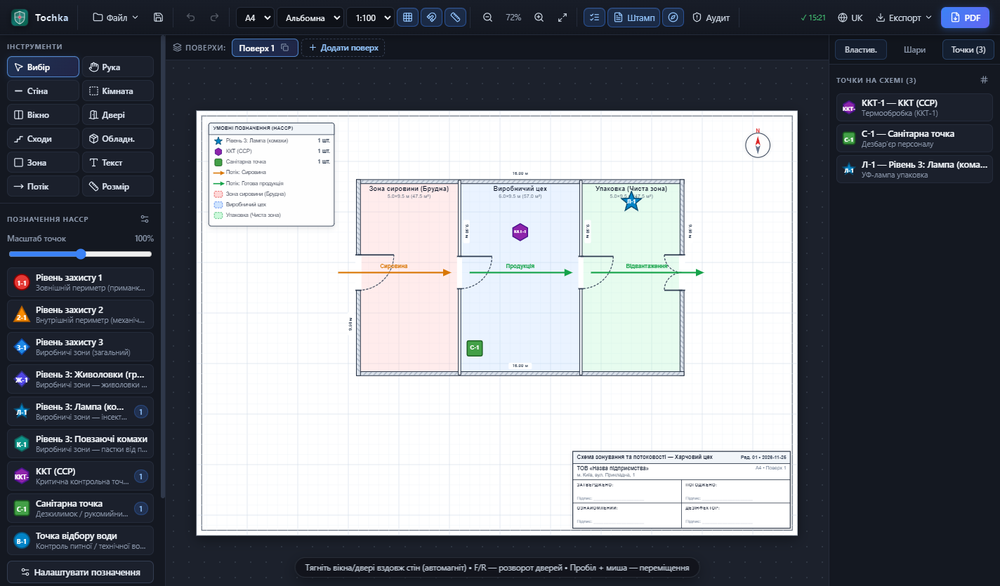

План з нуля або по фото / PDF БТІ
Завантажуйте скан або PDF техпаспорта як підкладку, регулюйте прозорість та обводьте стіни. Магнітні вікна, двері, ворота, сходи, огорожа території, 9 блоків обладнання та лінійка в метрах.
Створюйте професійні схеми будівель, 3-рівневого пест-контролю та потоків НАССР за 10 хвилин. Багатоповерховий PDF, Розумний аудит, Журнал моніторингу та QR-наліпки на пастки — без щомісячних підписок.

🔍 Натисніть для збільшенняРеальні знімки інтерфейсу без рендерів. Клікніть на будь-який екран, щоб відкрити його у повній роздільній здатності.
Замінює AutoCAD, Word і Excel: малюйте план по фото/PDF, розставляйте пастки й друкуйте повний пакет документів для Держпродспоживслужби або ISO 22000.
Завантажуйте скан або PDF техпаспорта як підкладку, регулюйте прозорість та обводьте стіни. Магнітні вікна, двері, ворота, сходи, огорожа території, 9 блоків обладнання та лінійка в метрах.
Готові бібліотеки: Рівень 1 (приманки), Рівень 2 (механічні), Рівень 3 (живоловки, УФ-лампи, повзаючі комахи), ККТ, Санітарні точки та Вода. Статуси точок (норма / поїдання / активність) та власні препарати.
Вбудований аудитор миттєво підсвічує перетини брудних і чистих потоків, завелику відстань між пастками (>15 м / >10 м), родентициди в чистих зонах та УФ-лампи над столами. При експорті в PDF підказки ховаються автоматично.
Багатоповерховий векторний PDF (A4/A3) з авто-легендою, логотипом клієнта й штампом на 4 підписи. В 1 клік генерує Журнал контролю пасток (PDF), аркуш А4 фірмових наліпок із QR-кодом та CSV-реєстр для Excel.
Створюйте окремі вкладки (Територія, Поверх 1, Поверх 2), дублюйте планування та перемикайте шари (Пест-контроль / Потоки / Зони) — друкуйте різні документи без повторного малювання.
Програма встановлюється на ваш Windows-ПК і працює без інтернету. Усі проєкти клієнтів зберігаються локально. Криптографічна активація ключем TH1-... вводиться один раз і діє безстроково.
Окупається буквально з 1–2 замовлених схем. Платите один раз — користуєтесь назавжди без прихованих щомісячних платежів.
Завантажте інсталятор Windows ↗ — одразу доступно 5 безкоштовних запусків із повним функціоналом.
Створіть реальну схему об’єкта, протестуйте Розумний аудит, роздрукуйте PDF та QR-наліпки.
Скопіюйте 8-значний Код ПК (наприклад, A7F2-9C14) у вікні ліцензії та надішліть у Telegram або WhatsApp.
Отримайте персональний криптографічний ключ, вставте його один раз — програма активована назавжди офлайн.